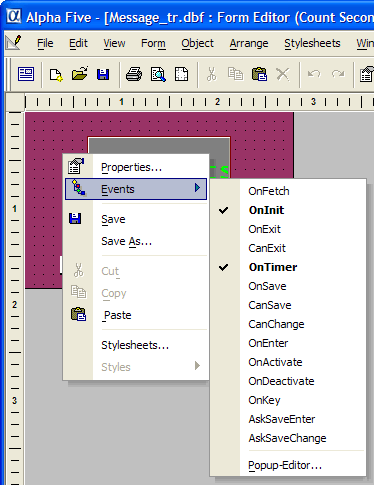
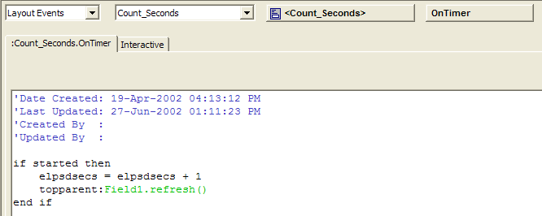
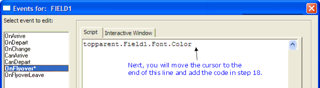

Object Events Revisited
Earlier we looked at a list of a form's object's events while designing the Sign In form (see Figure 25). Events are associated with objects and different objects have different types of events. However, all objects of the same type have the same set of events. That means that all form objects have the same events.
An event is something that happens to an Alpha Anywhere object. In the previous exercise you saw that the Count Seconds form used the OnTimer event. When the timer interval property is set to a value greater than zero (say 1 second) Alpha Five checks the OnTimer event whenever that interval passes (in this case every second) when the form is launched. Whatever Xbasic code has been defined for the OnTimer event is run. The OnTimer event is processed whenever the timer interval is active and it changes. Other form events are processed when the form is first opened, when the underlying record the form is synchronized with changes, and when you try to save or abandon changes to a form record.

Figure 34
The full list of an object's available events can be accessed in Design mode by right-clicking on the object and choosing events. The figure on the left shows the full list of events that can be programmed for the Count Seconds form.
There are numerous paths available in Alpha Anywhere to enable you to edit Xbasic scripts for an objects events. You can select the Event you wish to edit from the drop-down menu shown in Figure 34. Or you can go directly to the Code Editor, select New > Script (using Xbasic editor) and then select Layout Events.
 Note : Layout Events
will not be an available option in the Code Editor
unless you already have a layout open in design
mode.
Note : Layout Events
will not be an available option in the Code Editor
unless you already have a layout open in design
mode.
Then you can select the appropriate layout (if you have more than one layout open in design mode) and view all the objects in that layout that have events. Figure 35 below shows the Layout Events for the Count Seconds layout and the Count_Seconds form object itself in the Code Editor.

Figure 35
Once the

Figure 36
And once youve selected an event, that event is loaded into the Xbasic Code Editor as shown below. This figure shows the result of selecting the OnTimer event.

Figure 37
The Count_Seconds layout contains seven objects.
The
This list of events for the Count Seconds form above matches the available events you saw in Figure 25 for the Sign In form.
The available events are the same because both Count Seconds and Sign In are instances of the form layout object. All objects of the same type have the same set of available events.
Exercise 9 - Using the Pop-up Editor to view/edit Object Events
Open the Phone Messages database.
Display the Form tab of the Control Panel.
Open the Count Seconds form in Design mode.
Click once on the Field1 object. (That is the square with the word elpsdsecs printed across it).
From the View menu, select Object Explorer. The Object Explorer window opens.
Click Current Object.
In the Property box, expand the "Font" node by clicking the + plus sign.
Select the "Color" property.
Press the Copy to Clipboard button and select Property name relative.
Close the Object Explorer with the Close button.
Press the F11 key. (Alternatively, you can load the Pop-up Editor by selecting Object > Pop-up Event Editor.) The Pop-up Editor window opens. None of the events have been defined for this object yet. Events that have been defined are shown in bold.
Select the "OnFlyover" event.
Select the Xbasic Editor as the script creation method. A script editor window loads in the right region of the window.
Click in the script box. The event editor is shown in Figure 38 below.
Right-click in the script box and chose Paste. You should see the code in the script editor box as in figure 39.
Move the cursor to the end of the line and type the following:
Highlight the entire line and then right-click and select Copy.
Press the Save button to save this event script.
Click on the "OnFlyoverLeave" event in the Select region at the left.
Right-click in the script box and select Paste.
Change the text "blue" to "bright green".
Press the Save button to save this event script.
Press the Close button to close the Pop-up Editor window.
Press the
 Form View button on the layout
design toolbar.
Form View button on the layout
design toolbar.Press the Start button.
While the form is running (and the elapsed seconds are displaying), move the cursor (using your mouse) on and off the Field1 object square.
Press the Design Mode button to switch back to layout design.
Select View > Code Explorer. The Code Explorer window loads as shown below:
Press the Clear All Flyover Events button on the Code Explorer.
Select Yes to confirm the deletion of these events.
Press Close to close the Code Explorer.
Close all other windows.
|
You will use the Object Explorer to quickly select the appropriate object property value for use in this event's script. |
|
In step 14, when you click on the Copy to Clipboard button, you will see a list of object and property references listed. |
|
You will use the Object Explorer to quickly select the appropriate object property value for use in this event's script. |
|
You can see all the available events for Field1. Compare these events to those you saw previously for the Count_Seconds form object in Figure 36. Now, instead of looking at a form layout objects events, you are looking at the events for a field control object.
The OnFlyover event is triggered when you move the cursor over an object on a layout that you are viewing. You are working on Xbasic commands that will run when you move the cursor over any part of the field1 object when the Count Seconds form is displayed. Likewise, the OnFlyoverLeave event triggers when you move the cursor off an object. You will create code for both the OnFlyover and OnFlyoverLeave events in this lesson. |

The insertion point should be blinking in the script box. Now you can type Xbasic commands as you would for any Xbasic script. Since this is an Event script that you are creating, this script will run when the OnFlyover event is triggered for this object.

Figure 38
From Exercise 8, you know that this form displays an elapsed count of seconds when you press the Start button. The seconds are displayed in bright green. You are going to insert Xbasic code in this script to change the seconds display color to blue whenever you move the cursor over the Field1 object.

Figure 39
|
= "blue" |
The complete line of code should read:
|
topparent:Field1.Font.Color = "blue" |
As you move the cursor over (as the cursor flies over) the Field1 object, the seconds display changes to blue. When you move the cursor outside the Field1 object, the display changes back to bright green.
The next two steps will remove the Flyover events and set the state of the form back to where it was before you began this exercise. If you do not want to do this, skip to Step 33.
The code in the Field1.OnFlyover and Field1.OnFlyoverLeave events is cleared. The events are automatically removed from the box listing objects with existing events in the Code Explorer window.
|
Review of object aliases If you remember the discussion on alias object references, youll understand that Alpha Anywhere will look for this object (and its property) by starting with the top parent object of this Event. This OnFlyover event is part of the Field1 field object. The top parent of this event is the layout object that it is a part of. So Alpha Anywhere will start at the Count Seconds object (indicated by topparent ), then look for the Field1 object (indicated by :Field1 ), then look at the Font property (indicated by .Font ) and finally, the "Color" sub-property (indicated by .Color ). The full alias reference from the top parent form is not necessary here. You can achieve the same thing by using the following code: This.Font.Color = "blue" Alpha Anywhere will interpret the alias This to refer to the object that this event is attached to (or Field1 ). After you have saved some code for an event, Alpha Anywhere displays the event name in bold. Alpha Anywhere ignores events without code when those events are encountered during the course of an Alpha Anywhere program executing. The Code Explorer provides a quick way to see and edit all objects that have events defined in a particular layout. Within the Code Explorer, you can filter and view the same event types across all objects. The Code Explorer allows you to examine an events Xbasic commands in the right region, but you cannot edit code in that window. You must click on Edit Code and launch the Code Editor to alter an events code. You can, however, use the Clear All Flyover Events to quickly delete any code in the OnFlyover or OnFlyoverLeave events. |
Next
Xbasic Manipulation of Objects